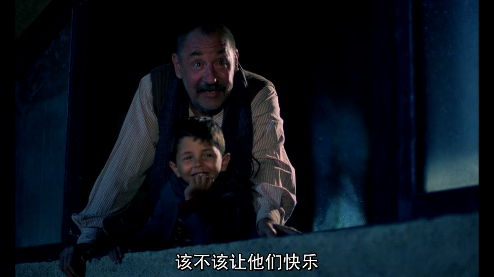

来自之前cnblog的博客
源地址：https://www.cnblogs.com/This-is-Y/p/13210728.html
天堂电影院

艾琳娜，你是我睡前最后的念想，又是我早上醒来第一个想到的人，你总是出现在我的梦里，我知道打电话不合适但是我喜欢你。
回忆就是因为回不去才可爱，才可贵。错过多年以后let go的坦然有时比悲情的执着更能予脑海留香
“电影和生活不一样 ，生活难多了“
“有一次，国王为美丽的公主开宴会
有个士兵在一旁站岗，看到公主经过他面前
她是绝色佳人，他立刻爱上她
但卑微的士兵怎配得上国王的女儿
有一天，他终于设法接近她
并告诉她没有她活不下
公主被他的深情感动，她告诉士兵
’如果你能等我100天，且日日夜夜在阳台下等我，百日之后，我就是你的‘
听了这话，士兵在阳台下等
一天，两天。十天，二十天
公主每晚往外探，他仍伫立终宵
风吹雨打,雪压霜欺都阻挡不了他
鸟停在头上，蜜蜂叮他，他都不动
但是，在第九十天时，士兵已全身苍白且消瘦
眼泪从眼眶里流了出来
他已支撑不住了，甚至连睡觉的力气都没有
公主一直注视着他
最后，在第九十九天的晚上，士兵站了起来
提起椅子，走了，走了”
“我知道士兵为何会那么做
因为他明白，如果在一百天时
公主不承认她的约定
那么士兵将会伤心难过、绝望地死去
所以他选择在99天的夜晚离去
这样公主将会永远惦记着他“
看到多多假扮神父，对艾琳娜说愿意每天在她家外面等她知直到她爱上他，我以为前面的故事只是导演安排的一处铺垫，直到看到多多退伍，和艾佛特在海边畅谈，我才意识到自己的格局是多么小，多多就是那个士兵，公主就是艾琳娜，只是他不是在艾琳娜家外面等，而是在这座小镇等，等艾琳娜的消息。除此之外，士兵是自己醒悟的，而多多，是艾佛特成就了他。
海上钢琴师
可能会有人不理解1900的做法，放弃陆地，与弗吉尼亚号共生死。我一开始也想不通。但是后来，站在他的角度想，对于1900来说，他出生在这艘船上，长大在这艘船上，对他来说，弗吉尼亚号就是他的一切。换成我们，我们出生在陆地上，成长在陆地上，要我们为了自由（？），名利，金钱放弃陆地，转而去海洋或者天空，地底生活，你会愿意吗。就像他自己说的那样，他在舷梯上看不到尽头，他害怕这种无限。
借用豆瓣中一个人的话：
每个人都在不同的船上，船的大小不同，人生格局不同，这个世界太复杂，也有少部分人活在“非主流社会”，不出山、不出村的人，一辈子同在一艘船上无区别。但，如果能够通过手中的“钢琴”把有限的人生变为无限，不下船，也是很棒的一生。而主流社会是太大的船，让人体失去自我存在价值。 一九00不是让我放弃自己的人生选择，出身、格局不可逆（生于主流社会，家庭、环境、教育塑造了自我的船只），1900告诉我：无论大船小船都要有自己的“钢琴”如此，才能把有限的“琴键”变成无限可能。只有做自己真正擅长的、兴趣的事，才有人生的价值及意义展现出无限可能。 任何时候都可以“改变生活，从头开始”，格局可以打破。
1900遇见那姑娘时弹奏的曲子：Playing love（piano version） —Ennio Morricone